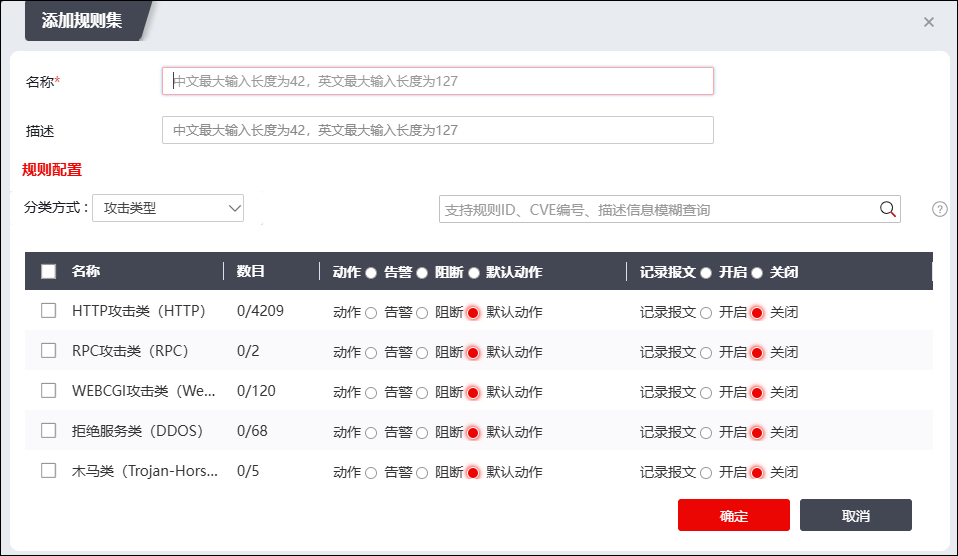
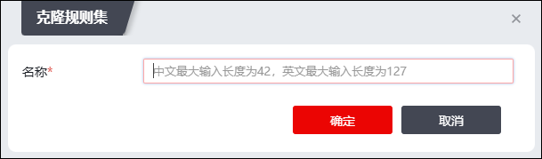
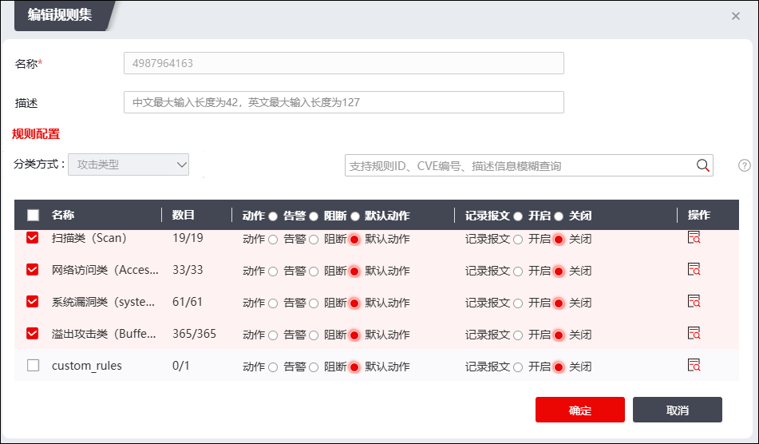
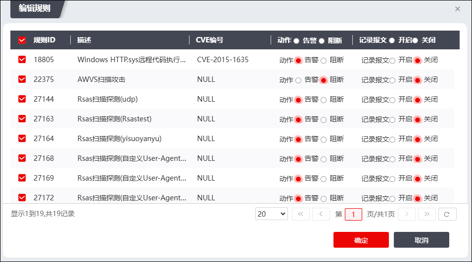
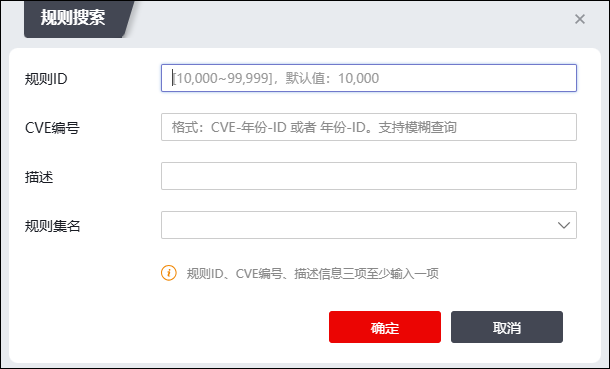

入侵防御规则集用来描述网络中存在的攻击行为的特征，NGFW通过将数据流和入侵防御规则进行匹配来检测和防范攻击。如果某个数据流匹配了某个防御规则时，设备会按照该防御规则的动作来处理数据流。每个防御规则都有缺省的动作（阻断或者告警）。
l阻断：指丢弃符合防御规则的报文，并记录日志。
l告警：指对符合防御规则的报文放行，但记录日志。
天融信的入侵防御攻击检测规则库包含了所有的系统攻击检测规则，管理员可以根据具体的需求选择系统攻击检测规则，并为其选择相应的处理方式以配置攻击检测规则集。NGFW已经预定义了入侵防御规则集，并提供规则库的定期更新，提高防御性能。
配置入侵防御规则集的具体操作如下：
| 步骤1 | 选择 ，激活“规则集管理”页签。 |
| 步骤2 | 添加规则集。 |
添加规则集有两种方式，一种是不基于任何规则集新增；一种是基于已添加的规则集克隆规则集。
Ø不基于任何规则集新增
1）点击“添加”，弹出“添加规则集”对话框，如下图所示。

在设置规则集时，各项参数的具体说明如下表所示。
参数 |
说明 |
|---|---|
名称 |
必填项，设置攻击检测规则集名称。 |
描述 |
设置攻击检测规则集的描述信息。 |
规则配置 |
设置攻击检测规则集。 1）在分类方式下拉列表中选择攻击分类。可选项：攻击类型、风险等级、流行程度、操作系统和精选。 2）勾选分类方式名称前的复选框，选择攻击防御类型，并在动作处的单选按钮选择对攻击类型的防御动作，可选项：告警、阻断和默认动作。 Ø告警：对匹配到规则的报文放行且记录日志。 Ø阻断：对匹配到规则的报文丢弃且记录日志。 Ø默认动作：规则库中所有规则都有默认动作（告警或者阻断），“规则配置”的“动作”参数设置为“默认动作”，表示不对规则库中默认动作进行修改，按照规则库中不同规则的默认动作进行攻击防御。 3）记录报文：开启后，匹配到该规则的报文都会记录报文，查看记录的报文请前往 日志查看。 |
2）设置完成后，点击【确定】按钮，完成规则集添加。
Ø基于已添加的规则集克隆规则集
1）选择已添加的规则集，点击“”，弹出“克隆规则集”对话框，如下图所示。

2）填写新的攻击检测规则集名称。点击【确定】按钮，完成攻击检测规则集复制。
|
²克隆的规则集的配置与克隆源规则集的配置完全相同。 |

| 步骤3 | 修改已添加规则集的子规则配置。 |
1）选择需要修改的规则集，弹出“编辑规则集”对话框，如下图所示。

2）点击需要修改的规则集所在行“操作”列的“”，在弹出窗口中修改规则集子规则的动作以及报文记录状态，界面如下图所示。

| 步骤4 | 维护规则集。 |
点击“”下滑到“清空”可清空规则集；点击“”可搜索规则集，如下图所示。

|
²入侵防御默认规则集不允许编辑、删除、清空，可以被克隆。 |